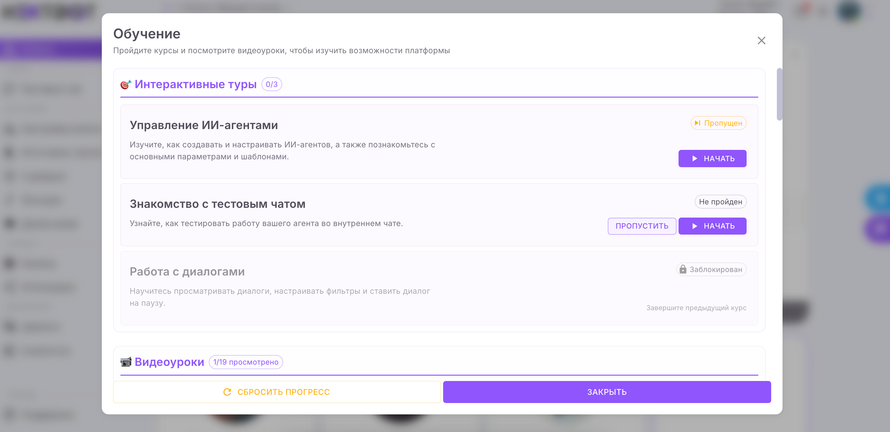
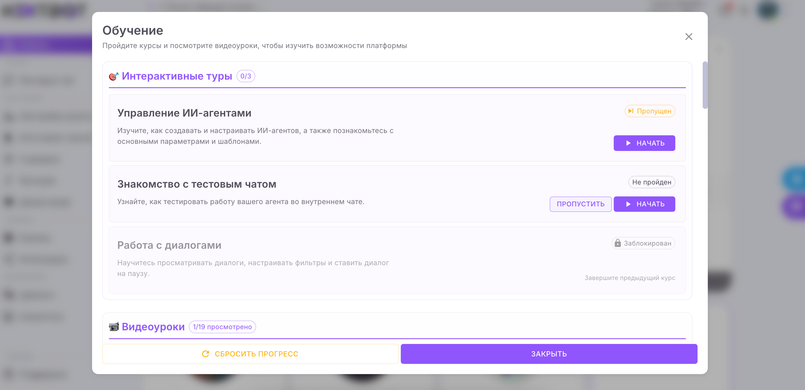

Подготовка и понимание платформы
Что такое NextBot
NextBot — это облачная платформа для создания ИИ-агентов без программирования. Она позволяет за несколько часов собрать менеджера, который:
💬 Мультиканальность
Отвечает в Telegram, VK, WhatsApp, Авито и на сайте
📝 Сбор данных
Уточняет детали и сохраняет контакты клиентов
🎯 Квалификация
Классифицирует лиды и передаёт владельцу
🌙 24/7
Работает круглосуточно без участия оператора
Почему именно NextBot
- ✅ Без программирования — интерфейс понятен новичкам
- ⚡ Мощные интеграции — CRM, Google Sheets, Python, календари
- 💬 Умные диалоги — на GPT-5, без перегрузки токенов
- 🔄 Автоматизация — функции отправки заявок, вызова менеджера и т.д.
- 🧩 Масштабируемость — агенты под разные ниши (сайт, Авито, соцсети)
Шаг 1. Регистрация
- Перейдите на сайт nextbot.ru (код «DmitriyDubrovsky», помогаю своим рефералам)
- Нажмите «Войти / Регистрация»
- Через 3 минуты вы окажетесь в личном кабинете — центре управления агентами
Шаг 2. Пройдите встроенное обучение
Справа в кабинете нажмите иконку 🎓 «Обучение». Пройдите 3 мини-обучения:
- Управление ИИ-агентами
- Знакомство с тестовым чатом
- Работа с диалогами
 

Шаг 3. Посмотрите видео
Перед началом настройки посмотрите официальный обзор сервиса: https://youtu.be/al0WiX4_4XM
Это 7-минутное видео поможет понять интерфейс и принципы работы.
Основа и «скелет» агента
Шаг 1. Создайте Telegram-бота
- Откройте Telegram и найдите @BotFather
- Введите команду
/newbotи следуйте инструкциям - Получите токен (пример:
1234567:AAHfLz...) - Сохраните токен — он понадобится в NextBot
Шаг 2. Подключите бота к NextBot
- В кабинете NextBot откройте «Каналы» → «Telegram»
- Нажмите «Подключить» и вставьте токен
- Статус должен измениться на «Подключено»
Шаг 3. Создайте нового агента
- Перейдите в «Агенты» → «Создать агента»
- Укажите параметры:
- Название: ИИ-менеджер по [услуга]
- Модель: GPT-5
- Температура: 0.3–0.5
- Буфер сообщений: 10 секунд
- Стартовое сообщение: короткий текст без кнопок
Шаг 4. Добавьте системный промпт
Перейдите в раздел «Настройка агента» → «Системный промпт». Вставьте шаблон промпта (напишите в бота слово «АГЕНТ», он вам отправит инструкцию, как сделать промпт для агента) и заполните свои данные: услуга, цены, гео, УТП.
Шаг 5. Проверьте работу бота
Откройте «Тестовый чат». Отправьте команду /start и убедитесь, что бот отвечает корректно.
✅ Критерий готовности
Бот стабильно отвечает на /start, не сыплет лишними фразами и держит контекст.
⚠️ Примечания
- Если в Telegram кнопка «Начать» не работает — используйте /start или «Привет»
- Если бот не отвечает — проверьте токен и подключение
- Для корректной работы буфера сообщений установите задержку 10 секунд
Диалог, функции и база знаний
Цель:
добавить боту функциональность, чтобы он мог собирать данные, уведомлять владельца и отвечать на частые вопросы.
Шаг 1. Добавьте мини-опрос (анкету)
Создайте 3–5 простых вопросов для первичного опроса клиента. Примеры:
- Какая у вас задача по [услуга]?
- Когда планируете старт?
- Где выполнять (район/онлайн)?
- Есть ли ориентир по бюджету?
- Как к вам обращаться и куда прислать детали (телефон/мессенджер)?
Рекомендации:
- Не задавайте более одного вопроса за сообщение
- Оставляйте короткие реплики (1–2 строки)
- Включите буфер сообщений (10 секунд)
Шаг 2. Подключите функции
Функция 1: SAVE_USER_DATA
Описание: сохраняет имя, телефон, запрос, время связи и тип лида.
Создание:
- Откройте «Функции» → «Создать функцию»
- Название: SAVE_USER_DATA
- Параметры: name, phone, request_summary, preferred_time, tags
Функция 2: SEND_NOTIFICATION
Описание: отправляет уведомление владельцу с кратким резюме заявки.
Создание:
- «Функции» → «Создать функцию»
- Название: SEND_NOTIFICATION
- Действие: «Админу в мессенджер» → «Telegram»
- Текст уведомления: «[ЛИД: {тип}] {Имя}, {Телефон}, {Краткий запрос}, Срок: {срок}, Бюджет: {если есть}»
Шаг 3. Добавьте базу знаний
База знаний позволяет боту отвечать на типовые вопросы клиентов.
Порядок действий:
- Перейдите в «Источники знаний» → «База знаний» → «Создать вопрос-ответ»
- Введите 5–10 частых вопросов и ответов по вашей нише
Примеры:
- Сколько длится мероприятие?
- Можно ли заказать в выходные?
- Как происходит оплата?
- Работаете ли вы с организациями?
- Что входит в стандартный пакет?
Проверка: задайте эти вопросы боту — он должен отвечать коротко и по делу.
✅ Критерий готовности
Бот задаёт вопросы, сохраняет контакты, уведомляет владельца и корректно отвечает из базы знаний.
Тесты, фильтрация
Цель:
проверить стабильность бота, реакцию на разные типы клиентов и работу функций.
Шаг 1. Проверьте тестовые сценарии
Создайте тестовые диалоги под каждую категорию лидов:
- Горячий лид — бот быстро собирает данные и передаёт владельцу
- Тёплый лид — интерес есть, но сроки не определены
- Холодный — интерес поверхностный, бот отправляет материал для догрева
- Сложный запрос — технический вопрос, бот предлагает связаться со специалистом
- Спам/нерелевант — бот вежливо завершает диалог
Шаг 2. Проверьте работу автоматизации
- Горячий — контакт сохранён, уведомление отправлено
- Тёплый — отправлен чек-лист или кейс
- Холодный — предложен полезный материал
- Сложный — передача оператору
- Спам — диалог завершён
Шаг 3. Настройте уведомления о лидах
Проверьте, что уведомления приходят в Telegram.
Шаг 4. Финальная проверка
Проверьте:
- Стартовое сообщение работает
- Буфер сообщений включён (10 секунд)
- Функции активны
- Уведомления приходят
- Все типы диалогов отрабатываются правильно
✅ Критерий готовности
Бот корректно ведёт все сценарии, сохраняет данные и уведомляет владельца, работает 24/7, фильтрует лидов и передаёт только горячих.
Внедрите AI-ассистента сейчас и увеличьте продажи уже через неделю!
Примеры нейро-продавцов
⚠️ Для теста использовать несуществующий номер!
- https://t.me/ZayivkiYuiliya_bot - выдача кредитов
- https://t.me/okonbalkonpro_bot - остекление балконов
- https://t.me/pilomirr_bot - продажа пилорам
- https://t.me/dubrovskih_bot - продажа меда и пчел
Каких мы создаём ИИ-продавцов
Современный бизнес требует скорости, точности и персонализации. Именно для этого создаются ИИ-продавцы — нейро-ассистенты, которые общаются с клиентами, собирают заявки, консультируют и закрывают сделки 24/7.
Наши ИИ-продавцы — это полностью обученные агенты, созданные под конкретную задачу бизнеса. Они говорят на языке клиента, знают продукт и работают без усталости.
5 основных типов ИИ-продавцов
1. ИИ-продавец-консультант
Уточняет запрос клиента, помогает выбрать продукт, показывает варианты и аргументы. Подходит для e-commerce, услуг и розницы.
2. ИИ-менеджер заявок
Принимает входящие запросы с сайта, Telegram, Авито или соцсетей. Собирает контакты, классифицирует лидов и уведомляет владельца.
3. ИИ-продавец-дожиматор
Возвращает клиентов, которые не завершили покупку. Отправляет напоминания, спецпредложения и акции.
4. ИИ-консультант для бизнеса
Обучен работать с узкой нишей: стоматология, детские центры, мебель, строительство, франшизы и др.
5. ИИ-ассистент поддержки
Отвечает на часто задаваемые вопросы, разгружает операторов и помогает клиентам получать мгновенные ответы.
Что умеют ИИ-продавцы
- Понимают смысл запроса клиента, а не просто ключевые слова
- Отвечают быстро, без пауз и ошибок
- Собирают имя, телефон и комментарии
- Передают горячих лидов менеджеру или в CRM
- Работают 24/7 без отпусков и выходных
Выгоды для бизнеса
- Мгновенная обработка всех входящих запросов
- Снижение нагрузки на менеджеров
- Рост количества заявок без роста штата
- Повышение конверсии из обращения в сделку
- Полная автоматизация рутинных продаж
Запусти своего ИИ-менеджера уже через 14 дней
Мы соберём и обучим ИИ-продавца под твой бизнес: от сценариев до интеграции с CRM и Telegram. Он будет работать круглосуточно, принимать заявки, консультировать и продавать без участия человека.
👉 ХОЧУ СЕБЕ ИИ-МЕНЕДЖЕРА / ПРОДАВЦАБесплатный аудит вашего бизнеса
Если хочешь понять, где именно в твоём бизнесе можно внедрить ИИ и какие процессы автоматизировать — запишись на аудит. Это бесплатная встреча, где мы вместе разберём твою воронку и покажем, как ИИ может увеличить количество заявок и уменьшить ручной труд.
На аудите ты получишь:
- Анализ текущей системы привлечения заявок
- Подсказки, где автоматизация даст максимальный эффект
- Пример, как будет выглядеть твой ИИ-менеджер
- Рекомендации по настройке Telegram-воронки и лид-магнита
💎 Это 100% бесплатно!
И может принести вам миллион рублей в будущем — если внедрите в ближайшее время
⏰ Консультаций всего 7 в неделю! Осталось 2 места
👉 ЗАПИСАТЬСЯ НА АУДИТС уважением,
Дубровский Дмитрий
Основатель агентства "Пчёлка"